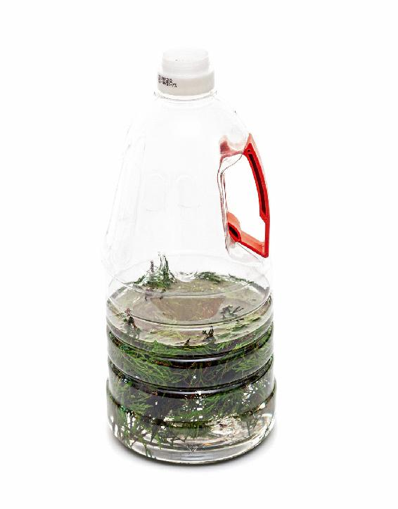
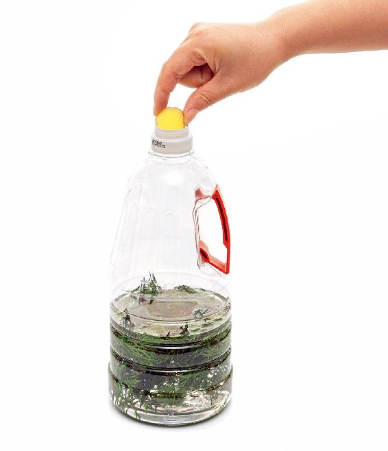
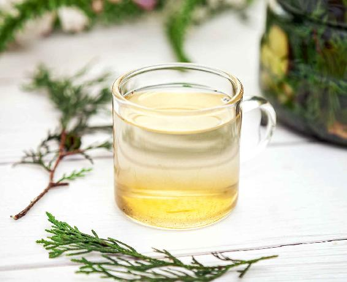
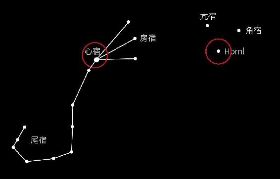

农历二月初二，是龙头节，也就是俗称的“二月二，龙抬头”。
二月初二这一天，我们吃的食物都跟龙有关，比如初春的春饼，这天叫作龙鳞饼；平常吃的面条，这天叫作龙须面；米饭这天叫作龙子。
其实这些民俗，就是为了让我们在春天的时候多吃米、面这些粮食。
春天，我们要多吃甘味的食物，而米、面就是甘味食物中最基本的一类，它们的味道是甘味中的正味。
春天多吃米、面等粮食对我们的身体有健脾、补气血的作用。
有些年轻朋友自己气血虚，问我应该吃什么补品。其实，他们的身体都挺健康的，无非就是平时不爱吃主食，总认为多吃水果、蔬菜才是健康的。
在我们的饮食结构中，粮食是最基本的组成，人每天吃得最多的必须是粮食。有些年轻的朋友想要补气血，不妨在春天每天多吃一碗饭，气血就补到了。
要想顺时而食，养出一个好身体，就从每天好好吃饭开始。
到了农历二月初二龙头节，到大街上去看，生意最好、排大队的地方一定是理发店。特别是北方，这一天人们都到理发店理发。因为北方的风俗是正月不理发、不剃头，到了二月才会理发、剃头。特别是到了二月初二这天，要给小朋友理发，叫作“二月二剃龙头”，寓意一年都有精神头，而且会鸿运当头。
这些民俗里蕴含了很深的文化含义，它跟古代天象、养生有关，最主要的还是跟养护头发有关。
一年中有两个养发关键期，一个在春季，一个在秋季。这两个时期养发、护发的方法还不一样。
在春季，差不多从二月二前后开始，进入一年中头发生长的旺盛阶段。春天和夏天是头发长得最快的时候，每天能长将近半毫米。在二月初二这一天理发，头发很快就能长长。而对于在秋、冬季脱发比较厉害的朋友来说，春天正好是生长新头发的好时机。
在春天，养发首先就要养护头发的生长，给头发在春夏两季的生长打下一个很好的基础。接下来的三个月，如果能顺时养护，头发会长得又多又快。
侧柏叶是侧柏的叶子，古人用它来洗头，生发、乌发的效果特别好。还可以用生姜来按摩头皮，疏通头皮经络，促进吸收。
侧柏叶古方生发药酒
原料：侧柏叶200克，带皮生姜3片，白酒1斤（500毫升）。


做法：
1. 把侧柏叶剪成小段。
2. 切三片带皮的生姜，和侧柏叶一起放到白酒里，浸泡两周。当您看到酒的颜色变成偏棕色时，药酒就可以使用了。

做法：先切一片生姜，擦头部脱发的部位。然后再把药酒抹上，继续用姜片来擦脱发的部位，擦5分钟左右，直到头皮有发热的感觉就行了。
记住：头上涂抹的药酒不要洗掉。每天早晚各擦一次，坚持一个月，一般来说，脂溢性脱发的朋友此时就可以看到效果了，原来没有头发的部位会长出细细的小绒毛。
古代没有现在的萃取技术，所以古人用白酒来泡侧柏叶，这样就提取出了它的有效成分。
白酒有杀菌消毒、溶解油脂的作用。所以这个生发药酒，主要适用于脂溢性脱发，也可以用于斑秃。
脂溢性脱发一般比较常见，很多男性朋友的脱发都属于脂溢性脱发，往往是从头顶开始的，有的人是发际线逐渐退后，有的人是在头顶正中秃出来一个圆圈，俗称“地中海式脱发”。
斑秃会在局部形成一个圆圆的脱发区，有的像铜钱那么大，有的像鸡蛋那么大，有些朋友的斑秃可能是长期形成的，有些朋友可能是突然之间出现的。
以上两种情况您都可以用到这款药酒。
其他类型的脱发也是可以用的，只是效果没有脂溢性脱发和斑秃的好。导致头发脱落的原因有很多种，不同的类型、不同部位的脱发，它的成因都不一样，调理的方法也不一样。大多数的脱发还是要通过内调才能够起作用。这款药酒是外用的，对头发的护理相对来说比较简单。
有些朋友脱发的时间已经很长了，局部的头皮已经非常光滑、发亮，甚至角质化，毛囊已经没有再生能力了，用药酒就没有什么效果了。
如果是由于烫发、染发引起的脱发，头皮和头发都受损了，可以用侧柏叶和生姜来护理，但是最好不用白酒，而是应该抹一些头皮护理液，给它保湿和补充营养。
读者评论：擦了侧柏叶酒后，同学的额头上方长出了很多细发
CN烨：同学的发际线越来越靠后了，我把侧柏叶泡酒的方法推荐给了他，他抱着试试的心态用了一段时间，前几天他告诉我，他额头上方长出了很多细发。
允斌解惑：侧柏叶，它确实是让人百子千孙
清风：请问侧柏叶是柏树的叶子吗？我们这里俗称扁柏，就是柏树，它的叶子是扁的，也叫百子树！每当有人家要办婚事都会采些放婚房里寓意百子千孙！
允斌：是的。侧柏叶对肝、肾都有好处。它确实是让人百子千孙的宝贝。
樱桃：新鲜的侧柏叶可以吗？
允斌：可以，新鲜的侧柏叶更好。
法朵：老师，可以侧柏叶、姜片一起泡吗？
允斌：可以。
农历的二月初二，是“龙抬头”的日子，这可不是一个简单的民俗，它代表了中国古代非常先进的天文学知识，以及由此发展出来的中医的一些传统理论，我们现在用的一些古代的名方，也跟它大有关系。
“龙抬头”是老百姓的一种俗称，古代的文化人把它叫作什么呢？就是《周易》里所说的“见龙在田”。
我们中国人自称是龙的传人，但龙到底是一种什么样的动物呢？从古至今也没有人见过真的龙。其实，龙本来就是古人仰望星空时想象出来的一种神兽，它是天上的星象，不是人间的动物。
整个春天，只要您在天亮前起床，仰望星空，都能看到这条中华民族世世代代尊崇的“龙”。
我们可以想象一下，古人在没有灯光的夜晚，仰望满天繁星的时候，肯定会觉得这些星星浩如烟海，怎么来区分它们呢？他们就采用了一个简单的方法——把天空划分为四块，也就是四象。四象中的星星又组成了四种神兽，每种神兽代表一个象，就是：左青龙、右白虎、前朱雀、后玄武，它们分别代表了东西南北四个方位。
每一象由七种星宿（xiù）组成，四象一共是二十八种星宿，这就是二十八星宿的来源。
星宿是什么概念呢？相当于西方的星座。西方人把几颗星星组成的一个形状叫作星座，东方人把它叫作星宿。
在东方，青龙七宿又称龙星，由角、亢、氐、房、心、尾、箕七组星宿组成了一条龙的形状，这就是古人所说的青龙，也称为苍龙七宿。这组星星的形状，跟我们现在在甲骨文和金文中看到的龙字形状是非常一致的。
据中国天文考古大家冯时先生考证，“龙”这个字，正是苍龙七宿的象形。最初古人造这个字的时候不是根据现实中的动物来造的，而是照着天上的龙星形状来造的，代表的就是天上的龙星。
其实，古人对龙所作的种种描述，说的都是天上的星象，它是一个天文学的概念。
《说文解字》是这样解释龙这个字的：“龙，鳞虫之长，春分而登天，秋分而潜渊。”
如果我们不了解一些天文学的知识，就不明白这句话说的是什么意思。其实，这句话是说龙星到了春分的时候，就在东方的夜空上升；到了秋分的时候就下沉到了地下。这是古人观天象而得出的结果。
从东西南北的四象——青龙、白虎、朱雀、玄武，然后又联系到中医所说的五行，所以中国文化追溯到根上都是从一个本源出来的。
古人观察到天上的龙星，到了农历二月初二前后，在黄昏之后位于龙角位置的角宿会从东方的地平线上升起，这种天象就叫作“见龙在田”，也就是俗称的“龙抬头”。
天文考古学大家冯时先生对这些有非常精彩的论述，如果您对国学特别感兴趣，或者是想研究《周易》，或者是想深入学习中医传统文化的朋友，我建议您的参考书籍中可以加入冯时先生的《中国天文考古学》。天文学是中华文明的起源，我们只有回到原点、回到根上去了解中华的传统文化，才能明白现在传承下来的这些国学文化、中医文化到底是怎么回事。
由于岁差的关系，现在我们在二月二这天想看到“龙抬头”，需要等到晚上10点以后了。但是您可以带孩子早上起来看。
春天的时候，龙星（苍龙七宿）夜晚从东方天空升起，到了早上就转到南方。
我家的阳台正对南方。立春之后，每天早上起床，我都能看到龙星横亘在南天，头在西（这里的一组星叫角宿，是“龙角”），尾在东（这里的一组星叫尾宿，是“龙尾”），若隐若现。
因为城市灯光的关系，不能看清组成龙星的所有星宿，但其中有两颗特别亮的星星是我们很容易看到的。注意看图中我用红圈画出的两颗星。

左边一颗是“龙心”的心宿二，它属于天蝎座。这颗星星很亮，而且是美丽的红色，您可以很容易找到它。它就是诗经“七月流火”所指的“火”——“大火星”，在后面的寒食节一篇中我还会具体地讲它与时节的关系。
右边一颗是“龙角”的角宿一，它属于室女座。在天气好时，它也很醒目。当角宿在日落后出现在东方地平线，这就是“龙抬头”了。
龙抬头，其实代表的就是时节。古人就是这样年复一年顺应着时节的流转，过着“天人合一”的生活。
读者评论：终于有机会让孩子学习一下天文知识了
清水出芙蓉：终于有机会让孩子学习一下天文知识了。老师真的是知识渊博，上知天文，下知地理，感恩老师！
曾经我给大家介绍过一种与虎字有关的、老年人冬季可以用到的中药——虎潜丸。其中说到了“云从龙，风从虎”，龙代表水，而风代表虎。
“青龙”是春季的代表，是东方的代表，同样，也是水的代表，代表要把水给排出去，就像天很旱了一直不下雨，大家都在苦苦地等待，求这个“龙”来下雨。所以我们见到“龙”来了，就知道雨会降临了。
青龙汤分大青龙汤和小青龙汤，它们都出自医圣张仲景的千古医书《伤寒杂病论》。其中，大青龙汤的药效是很猛烈的，需要医生来给病人谨慎地开处方。小青龙汤药效温和，现在有中成药，如小青龙颗粒、小青龙冲剂等。
“龙”代表水，而东方的“青龙”代表的是行雨——把身体内的水给排出去。身体内的水是什么呢？主要就是痰饮，痰饮就是在我们心肺部位积存的水。
在中医传统中，有人也用小青龙汤来治感冒，这有点大材小用了，因为治感冒的话，食疗就已经足够了。其实，小青龙汤是可以治大病的，当然这个需要医生来开处方。
小青龙汤对哪些病有调理作用呢？一个是咳喘，一个是鼻炎，再就是肺心病。
中医有句老话叫作“外科不治癣，内科不治喘”。喘是非常难治的，如果治不好，大夫就会丢脸，所以不治喘。
造成咳喘的原因各种各样，支气管炎、肺炎、哮喘……如果一个人又咳喘又不出汗，还挺怕冷的，用小青龙汤就比较合适。
有些患有慢性支气管炎的朋友，每年都会定期发作，如果再加上咳喘、不出汗、怕冷这些情况，您可以咨询医生，看有没有可能用到小青龙颗粒。
过敏性鼻炎也是一种非常难缠的病，有此病的朋友也不妨咨询一下医生，看能不能服用小青龙颗粒。
很多人常年咳喘，反复犯病，然后就会形成一些症状——必须靠着坐，尤其晚上睡觉不能躺平，一躺平就想咳，必须枕一个很高的枕头才可以。严重时咳出来的痰都是泡沫样的，老年人可能还会两腿浮肿。
以上这些症状，是由于肺的问题造成了心脏的问题，是肺源性的心脏疾病——肺心病，这些都是可以考虑用小青龙汤来治疗的。
简单总结一下，如果一个人的心肺长期有痰饮，有很多的浊水积存，一直都调理不好，那用小青龙汤就可以帮助排出这些浊水。
有一次我在电视台录节目的时候，一位主持人的鼻炎发作了，一直在打喷嚏。他说：“陈老师啊，其实我白天还不是最难受的，最难受的是晚上，一躺下睡觉，如果偏向左边睡，左边的鼻孔就堵上了；如果转过来偏向右边睡，右边的鼻孔又堵上了，特别难受，觉得呼吸都不顺畅。”
这位主持人患的就是季节性的过敏性鼻炎，其实也在小青龙汤的治疗范围，但小青龙汤毕竟是药，不是食，所以遇到这种问题，最好是到医院让医生来决定是否可以用。
我给大家介绍大青龙汤、小青龙汤，就是想说明一个问题——中药里有一些效果很好的方子。
如果您有一些疑难杂症，在医院治疗后觉得效果不佳，不妨找中医看一看，也许会有意想不到的收获。比如小青龙汤，它不仅仅能治咳喘、鼻炎，也还可以治很多大病。
像小青龙汤这么好的方子，它的历史已有两千多年了，可想而知，两千年以前的人，他们对各种中药的药性已经了解得非常透彻，真的是让我们叹为观止。
就连这些汤方的功效和药材组成，古人都编成了歌诀，方便我们后人来记忆——“小小青龙最有功，风寒束表饮停胸。细辛半夏甘和味，姜桂麻黄芍药同”。
有时候，我觉得古代的中医都是文学家，我曾经开玩笑说：“在古代，要是学不好语文，真的不好意思当医生。”
事实上，国学和中医文化真的是密不可分，中医文化也是国学的一种。如果您有兴趣去钻研的话，这里面的乐趣是无穷无尽的。
“龙抬头”的日子，“见龙在田，利见大人”。我也祝您二月二龙抬头，鸿运当头。